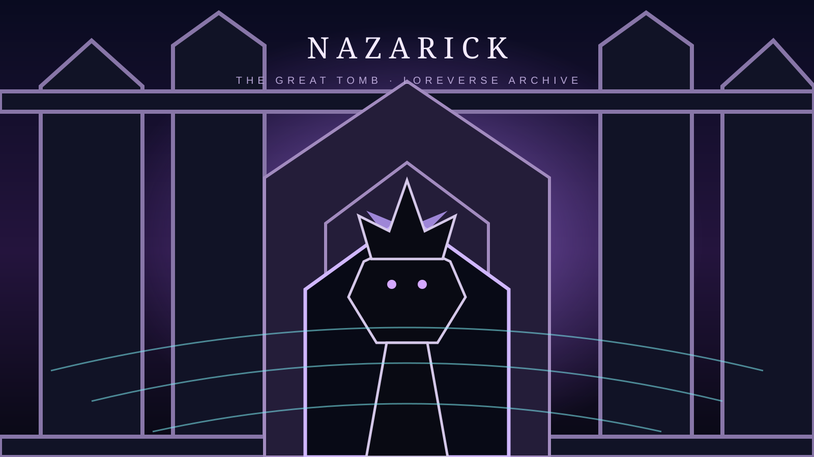

1–3-р давхар
Shalltear Bloodfallen
Үхэгсдийн төрлийн хүчирхэг хамгаалагч. Ойрын тулаан болон ид шидийн чадварыг хослуулдаг. Nazarick-ийн хамгаалалтын хамгийн хүчтэй NPC-үүдийн нэг.

Floor Guardian, Guardian Overseer, Area Guardian болон тусгай үүрэгтэй NPC-үүдийн лавлах. Үүрэг, зэрэглэлийг хооронд нь ялгав.
Үхэгсдийн төрлийн хүчирхэг хамгаалагч. Ойрын тулаан болон ид шидийн чадварыг хослуулдаг. Nazarick-ийн хамгаалалтын хамгийн хүчтэй NPC-үүдийн нэг.
Аварга голем хамгаалагч. Бусад Guardian-ууд шиг ердийн зан чанартай NPC биш; тулааны хүч, асар том биеэрээ онцлог.
Мөсөн бүсийн хамгаалагч. Зэвсэгт тулаанд мэргэшсэн дайчин бөгөөд дайсны хүчийг хүндэтгэх, тулааны ёс жаягийг чухалчилдаг.
Dark Elf хамгаалагч. Амьтан сургах, мангас удирдах, мөрдөх болон талбарын тактикт давуу талтай.
Aura-гийн ихэр. Байгалийн хүчтэй холбоотой өндөр түвшний ид шид ашигладаг; даруухан төрх нь асар их хүчийг нь далдалдаг.
Стратегич, удирдагч. Гал болон олон төрлийн тусгай чадвартай; Nazarick-ийн төлөвлөгөө, гадаад ажиллагаанд чухал үүрэгтэй.
Онцгой хамгаалалтын үүрэгтэй Floor Guardian. Түүний гол үнэ цэнэ нь энгийн тулааны хүч бус, өөрийгөө золиослохтой холбоотой тусгай нөлөө юм.
Guardian Overseer. Floor Guardian биш. Nazarick-ийн хамгаалагчдын ерөнхий удирдлага, захиргааны зохион байгуулалтыг хариуцна.
Nazarick-ийн ахлах үйлчлэгч. Floor Guardian биш; тусгай тулааны чадвартай, Touch Me-ийн бүтээсэн NPC.
Ainz-ийн бүтээсэн NPC. Nazarick-ийн Treasury болон хувирч дуурайх чадвартай холбоотой үүрэгтэй.
Pleiades-тэй холбоотой Area Guardian. Түүнийг зургаан Battle Maid-ийн нэг гэж тооцохгүй.
Nazarick-ийн зургаан Battle Maid: Yuri Alpha, Lupusregina Beta, Narberal Gamma, CZ2128 Delta, Solution Epsilon, Entoma Vasilissa Zeta.
Nazarick-ийн онцгой хүчтэй NPC. Түүнийг Floor Guardian гэж нэрлэхгүй; түүний байр суурь, ашиглалтын нөхцөлийг эх зохиолын контекстоор тайлбарлах хэрэгтэй.
Энэ лавлах нь гол үүрэг, шатлалыг нэгтгэсэн. Дүр бүрийн бүх чадварын жагсаалт гэж үзэхгүй.